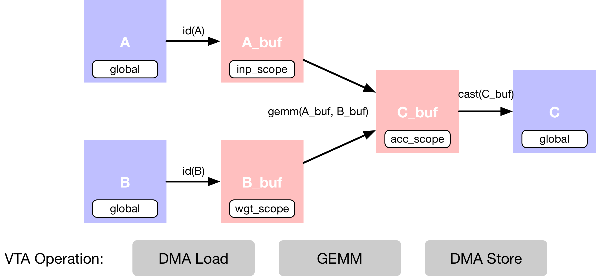
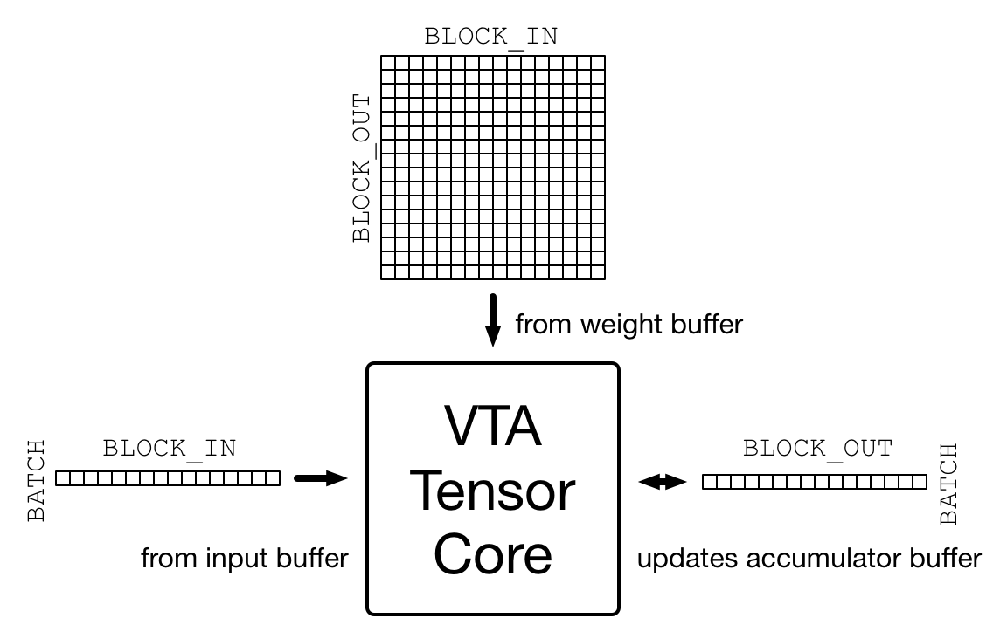
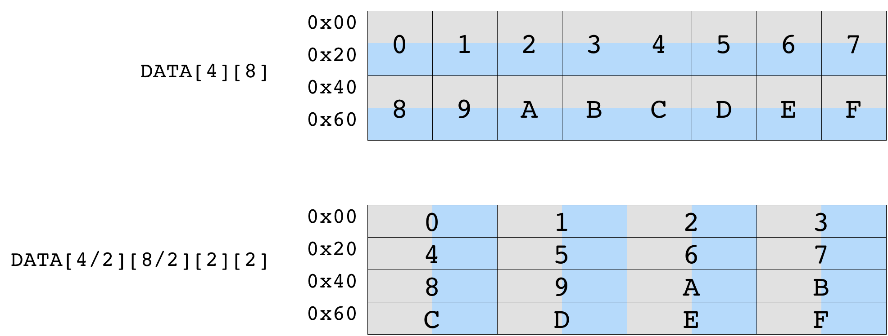

简单的矩阵乘法#
原作者: Thierry Moreau
在本教程构建在 VTA 入门 教程的基础上，并介绍在 VTA 上使用 TVM 工作流实现矩阵乘法所需的额外概念。
RPC 设置#
从编程 Pynq 的 FPGA 和构建它的 RPC 运行时开始，就像在 VTA 介绍性教程中做的那样。
import os
import tvm
from tvm import te
import vta
import numpy as np
from tvm import rpc
from tvm.contrib import utils
from vta.testing import simulator
# 从 3rdparty/vta-hw/config/vta_config.json 文件载入 VTA 参数
env = vta.get_env()
# 从操作系统环境中读取 Pynq RPC 主机 IP 地址和端口号
host = os.environ.get("VTA_RPC_HOST", "192.168.2.99")
port = int(os.environ.get("VTA_RPC_PORT", "9091"))
# 在 Pynq 上配置 bitstream 和运行时系统，
# 以匹配 vta_config.json 文件指定的 VTA 配置。
if env.TARGET == "pynq" or env.TARGET == "de10nano":
# 确保使用 RPC=1 编译 TVM
assert tvm.runtime.enabled("rpc")
remote = rpc.connect(host, port)
# 重新配置 JIT runtime
vta.reconfig_runtime(remote)
# 用预编译的 VTA bitstream 程序编程 FPGA。
# 通过将路径传递给 bitstream 文件而不是 None，
# 您可以使用自定义 bitstream 编程 FPGA。
vta.program_fpga(remote, bitstream=None)
# 在仿真模式下，在本地托管 RPC 服务器。
elif env.TARGET in ["sim", "tsim"]:
remote = rpc.LocalSession()
计算声明#
在这个例子中，描述了简单的矩阵乘法加法，它需要多个计算阶段，如下面的数据流图所示。
首先描述存在于 main memory 中的输入张量
A和B。其次，需要声明中间张量
A_buf和B_buf，它们将存在于 VTA 的 on-chip buffers 中。有了这个额外的计算阶段，就可以显式地分阶段 cached 读和写。接着，描述了
A_buf和B_buf上的矩阵乘法运算，以产生 product matrixC_buf。最后的运算是强制转换和复制回 DRAM，到结果张量
C。

数据布局#
以平铺数据格式描述占位符张量 A和 B，以匹配 VTA 张量核心施加的数据布局要求。
数据平铺（Tiling）
在瞄准加速器时，复杂性的来源之一是确保数据布局与加速器设计施加的布局相匹配。VTA 是围绕 tensor core 设计的，它在激活矩阵和权值矩阵之间执行周期的矩阵-矩阵运算，将结果矩阵添加到累加器矩阵，如下图所示。
{kind=link}

矩阵-矩阵乘法的维度在 vta_config.json 配置文件中指定。激活矩阵为 (BATCH, BLOCK_IN) 形状，权重矩阵为 (BLOCK_OUT, BLOCK_IN) 形状，由此推断，得到的输出矩阵为 (BATCH, BLOCK_OUT) 形状。因此，VTA 处理的输入和输出张量需要根据上述尺寸平铺。
下图显示了数据平铺对最初形状为 (4,8) 的矩阵的影响。平铺 (2,2) tile 保证了每个平铺内的数据是连续的。得到的平铺张量的形状是 (2, 4, 2, 2)。
{kind=link}

首先定义变量 m，n，o 来表示矩阵乘法的形状。这些变量分别是 BLOCK_OUT、BLOCK_IN 和 BATCH 张量维度上的乘法因子。默认情况下，配置文件将 BATCH、BLOCK_IN 和 BLOCK_OUT 分别设置为 1、16 和 16（将 BATCH 设置为 1 意味着计算构建块是向量-矩阵乘法）。
数据类型
重要的是，不仅要匹配 VTA 张量核心的内部 tile 维度，而且要匹配 VTA 期望的特定数据类型。VTA 目前只支持定点数据类型（fixed point data types），整数宽度在 vta_config.json 中指定。INP_WIDTH 和 WGT_WIDTH 分别用于激活和权重数据类型。此外，累加器数据类型整型宽度由 ACC_WIDTH 指定。
默认情况下，配置文件将 INP_WIDTH 和 WGT_WIDTH 设置为 8。累加器宽度 ACC_WIDTH 被设置为 32，以避免累加时溢出。结果是 env.inp_dtype 和 env.wgt_dtype 都是窄化的 8 位整型，而 env.acc_dtype 是标准的 32 位整型。
# 输出通道因子 m - 总共 16 x 16 = 256 输出通道
m = 16
# 输入通道因子 n -总计 16x16=256 个输入通道
n = 16
# Batch 因子 o （使用单个 batch 推理）
o = 1
# tiled 据格式的 A 占位符张量
A = te.placeholder((o, n, env.BATCH, env.BLOCK_IN), name="A", dtype=env.inp_dtype)
# tiled 据格式的 B 占位符张量
B = te.placeholder((m, n, env.BLOCK_OUT, env.BLOCK_IN), name="B", dtype=env.wgt_dtype)
# A copy buffer
A_buf = te.compute((o, n, env.BATCH, env.BLOCK_IN), lambda *i: A(*i), "A_buf")
# B copy buffer
B_buf = te.compute((m, n, env.BLOCK_OUT, env.BLOCK_IN), lambda *i: B(*i), "B_buf")
矩阵乘法#
描述矩阵乘法的结果张量 C，还有另一个 compute 运算。compute 函数采用张量的形式，以及描述张量每个位置的计算规则的 lambda 函数。
为了实现矩阵乘法，lambda 函数需要包含输入通道维度轴上的 reduction 公式。要创建 reduction 公式，可以使用 te.reduce_axis 声明 reduction axis，它在 reduction 的范围内。te.sum 接受要 reduction 的表达式和 reduction axes，以计算声明范围内所有 k 的值的和。
注意 reduction 需要在 32 位 env.acc_dtype 累加器数据类型上执行。
在这个阶段没有计算发生，因为只是声明应该如何进行计算。
# Outer input feature reduction axis
ko = te.reduce_axis((0, n), name="ko")
# Inner input feature reduction axis
ki = te.reduce_axis((0, env.BLOCK_IN), name="ki")
# Describe the in-VTA matrix multiplication
C_buf = te.compute(
(o, m, env.BATCH, env.BLOCK_OUT),
lambda bo, co, bi, ci: te.sum(
A_buf[bo, ko, bi, ki].astype(env.acc_dtype) * B_buf[co, ko, ci, ki].astype(env.acc_dtype),
axis=[ko, ki],
),
name="C_buf",
)
Casting 结果#
计算完成后，需要将 VTA 计算的结果发送回 main memory。
内存存储的限制
VTA 的特点之一是，它只支持 DRAM 存储在窄化的 env.inp_dtype 数据类型格式。这使能够减少内存传输的数据占用，但也使能够将宽的累加器数据类型量化为与输入激活数据类型匹配的数据格式。这意味着在神经网络推理的背景下，激活某一层后的输出可以直接被下一层 consumed。
对窄化输入激活数据格式执行最后一次 typecast 运算。
# Cast to output type, and send to main memory
C = te.compute(
(o, m, env.BATCH, env.BLOCK_OUT), lambda *i: C_buf(*i).astype(env.inp_dtype), name="C"
)
本教程的计算声明部分到此结束。
调度计算#
虽然上面几行描述了计算规则，但可以通过多种方式得到 C。TVM 要求用户提供名为 schedule 的计算实现。
调度是对原始计算的一组变换，它在不影响正确性的情况下变换计算的实现。这个简单的 VTA 编程教程旨在演示基本的调度变换，将原始的调度映射到 VTA 硬件原语（primitive）。
默认调度#
在构造了调度后，默认情况下，调度按以下方式计算 C：
# Let's take a look at the generated schedule
s = te.create_schedule(C.op)
print(tvm.lower(s, [A, B, C], simple_mode=True))
@main = primfn(A_1: handle, B_1: handle, C_1: handle) -> ()
attr = {"from_legacy_te_schedule": True, "global_symbol": "main", "tir.noalias": True}
buffers = {A: Buffer(A_2: Pointer(int8), int8, [256], []),
B: Buffer(B_2: Pointer(int8), int8, [65536], []),
C: Buffer(C_2: Pointer(int8), int8, [256], [])}
buffer_map = {A_1: A, B_1: B, C_1: C}
preflattened_buffer_map = {A_1: A_3: Buffer(A_2, int8, [1, 16, 1, 16], []), B_1: B_3: Buffer(B_2, int8, [16, 16, 16, 16], []), C_1: C_3: Buffer(C_2, int8, [1, 16, 1, 16], [])} {
allocate(A_buf: Pointer(global int8), int8, [256]), storage_scope = global;
allocate(B_buf: Pointer(global int8), int8, [65536]), storage_scope = global;
allocate(C_buf: Pointer(global int32), int32, [256]), storage_scope = global {
for (i1: int32, 0, 16) {
for (i3: int32, 0, 16) {
let cse_var_1: int32 = ((i1*16) + i3)
A_buf_1: Buffer(A_buf, int8, [256], [])[cse_var_1] = A[cse_var_1]
}
}
for (i0: int32, 0, 16) {
for (i1_1: int32, 0, 16) {
for (i2: int32, 0, 16) {
for (i3_1: int32, 0, 16) {
let cse_var_2: int32 = ((((i0*4096) + (i1_1*256)) + (i2*16)) + i3_1)
B_buf_1: Buffer(B_buf, int8, [65536], [])[cse_var_2] = B[cse_var_2]
}
}
}
}
for (co: int32, 0, 16) {
for (ci: int32, 0, 16) {
C_buf_1: Buffer(C_buf, int32, [256], [])[((co*16) + ci)] = 0
for (ko: int32, 0, 16) {
for (ki: int32, 0, 16) {
let cse_var_3: int32 = ((co*16) + ci)
C_buf_1[cse_var_3] = (C_buf_1[cse_var_3] + (cast(int32, A_buf_1[((ko*16) + ki)])*cast(int32, B_buf_1[((((co*4096) + (ko*256)) + (ci*16)) + ki)])))
}
}
}
}
for (i1_2: int32, 0, 16) {
for (i3_2: int32, 0, 16) {
let cse_var_4: int32 = ((i1_2*16) + i3_2)
C[cse_var_4] = cast(int8, C_buf_1[cse_var_4])
}
}
}
}
虽然此调度有意义，但它不会编译到 VTA。为了获得正确的代码生成，需要应用调度原语和代码注解，将调度变换为可以直接 lower 至 VTA 硬件 intrinsic 的调度。这些包括：
DMA 复制运算，将全局作用域张量复制到局部作用域张量。
用来做矩阵乘法的张量运算。
Buffer 作用域#
首先，设置 buffer 的作用域来告诉 TVM 这些 buffer 将存在于 VTA 的 on-chip SRAM cache 中。下面，告诉 TVM, A_buf，B_buf，C_buf 将分别存在于 VTA 的 on-chip 输入，权重和累加器（accumulator）内存中。
VTA’s On-Chip SRAMs
VTA 有三个不同的内存作用域，每个都对应于不同的片上 SRAM buffer。
env.inp_scope：输入 buffer，这是只读的 SRAM buffer，存储形状为(env.BATCH, env.BLOCK_IN)，类型为env.inp_dtype的矩阵。输入 buffer 包含 \(2 ^ \text{LOG_INP_BUFF_SIZE}\) 个矩阵元素（在vta_config.json文件中指定）。env.wgt_scope：权重 buffer，这是只读的 SRAM buffer，存储形状为(env.BLOCK_OUT, env.BLOCK_IN)，类型为env.wgt_dtype的矩阵。权重 buffer 包含 \(2 ^ \text{LOG_WGT_BUFF_SIZE}\) 个矩阵元素。env.acc_scope： Accumulator buffer，这是读/写 SRAM buffer，存储形状为(env.BATCH, env.BLOCK_OUT)，类型为env.acc_dtype的累加矩阵。累加器 buffer 是 VTA 的通用寄存器文件：它既保存卷积和矩阵乘法的中间结果，也保存池化、batch normalization 和激活层的中间结果。累加器缓冲区包含 \(2 ^ \text{LOG_ACC_BUFF_SIZE}\) 个矩阵元素。
# Set the intermediate tensor's scope to VTA's on-chip buffers
s[A_buf].set_scope(env.inp_scope)
s[B_buf].set_scope(env.wgt_scope)
s[C_buf].set_scope(env.acc_scope)
stage(C_buf, compute(C_buf, body=[reduce(combiner=comm_reducer(result=[(x + y)], lhs=[x], rhs=[y], identity_element=[0]), source=[(int32(A_buf[bo, ko, bi, ki])*int32(B_buf[co, ko, ci, ki]))], init=[], axis=[iter_var(ko, range(min=0, ext=16)), iter_var(ki, range(min=0, ext=16))], where=(bool)1, value_index=0)], axis=[iter_var(bo, range(min=0, ext=1)), iter_var(co, range(min=0, ext=16)), iter_var(bi, range(min=0, ext=1)), iter_var(ci, range(min=0, ext=16))], reduce_axis=[iter_var(ko, range(min=0, ext=16)), iter_var(ki, range(min=0, ext=16))], tag=, attrs={}))
DMA 传输#
需要调度 DMA transfer 来将存在于 DRAM 中的数据移动到 VTA on-chip buffer。这可以使用 compute_at 调度原语实现，该原语将 buffer 的复制嵌套到执行矩阵乘法的计算循环中。
插入 dma_copy pragmas 来指示编译器，复制运算将通过 DMA 批量执行，这在硬件加速器中很常见。最后，打印临时调度，观察将复制运算移动到矩阵乘法循环中的效果。
# Move buffer copy into matrix multiply loop
s[A_buf].compute_at(s[C_buf], ko)
s[B_buf].compute_at(s[C_buf], ko)
# Tag the buffer copies with the DMA pragma to insert a DMA transfer
s[A_buf].pragma(s[A_buf].op.axis[0], env.dma_copy)
s[B_buf].pragma(s[B_buf].op.axis[0], env.dma_copy)
s[C].pragma(s[C].op.axis[0], env.dma_copy)
# Let's take a look at the transformed schedule
print(tvm.lower(s, [A, B, C], simple_mode=True))
@main = primfn(A_1: handle, B_1: handle, C_1: handle) -> ()
attr = {"from_legacy_te_schedule": True, "global_symbol": "main", "tir.noalias": True}
buffers = {A: Buffer(A_2: Pointer(int8), int8, [256], []),
B: Buffer(B_2: Pointer(int8), int8, [65536], []),
C: Buffer(C_2: Pointer(int8), int8, [256], [])}
buffer_map = {A_1: A, B_1: B, C_1: C}
preflattened_buffer_map = {A_1: A_3: Buffer(A_2, int8, [1, 16, 1, 16], []), B_1: B_3: Buffer(B_2, int8, [16, 16, 16, 16], []), C_1: C_3: Buffer(C_2, int8, [1, 16, 1, 16], [])} {
allocate(C_buf: Pointer(local.acc_buffer int32), int32, [256]), storage_scope = local.acc_buffer;
allocate(A_buf: Pointer(local.inp_buffer int8), int8, [16]), storage_scope = local.inp_buffer;
allocate(B_buf: Pointer(local.wgt_buffer int8), int8, [16]), storage_scope = local.wgt_buffer {
for (co: int32, 0, 16) {
for (ci: int32, 0, 16) {
C_buf_1: Buffer(C_buf, int32, [256], [], scope="local.acc_buffer", align=16)[((co*16) + ci)] = 0
for (ko: int32, 0, 16) {
attr [IterVar(i0: int32, (nullptr), "DataPar", "")] "pragma_dma_copy" = 1;
for (i3: int32, 0, 16) {
A_buf_1: Buffer(A_buf, int8, [16], [], scope="local.inp_buffer", align=16)[i3] = A[((ko*16) + i3)]
}
attr [IterVar(i0_1: int32, (nullptr), "DataPar", "")] "pragma_dma_copy" = 1;
for (i3_1: int32, 0, 16) {
B_buf_1: Buffer(B_buf, int8, [16], [], scope="local.wgt_buffer", align=256)[i3_1] = B[((((co*4096) + (ko*256)) + (ci*16)) + i3_1)]
}
for (ki: int32, 0, 16) {
let cse_var_1: int32 = ((co*16) + ci)
C_buf_1[cse_var_1] = (C_buf_1[cse_var_1] + (cast(int32, A_buf_1[ki])*cast(int32, B_buf_1[ki])))
}
}
}
}
attr [IterVar(i0_2: int32, (nullptr), "DataPar", "")] "pragma_dma_copy" = 1;
for (i1: int32, 0, 16) {
for (i3_2: int32, 0, 16) {
let cse_var_2: int32 = ((i1*16) + i3_2)
C[cse_var_2] = cast(int8, C_buf_1[cse_var_2])
}
}
}
}
张量化#
调度 transformation 的最后一步是对调度应用 tensorization。张量化类似于向量化，但将这个概念扩展到了高维计算单元。因此，在声明数据布局输入占位符时，张量化会施加数据布局约束。我们已经以平铺的形式排列了张量，所以接下来需要做的是循环重新排序以适应张量化。
在这里，选择将最外面的 reduction 轴移出。这表明首先遍历输入通道，然后是 batch 维度，最后是输出通道。最后，应用张量调度原语沿着最内层矩阵的矩阵乘法张量块的外轴张量。打印最终的调度，该调度已准备好由 VTA 运行时 JIT 编译器生成代码。
s[C_buf].reorder(
ko, s[C_buf].op.axis[0], s[C_buf].op.axis[1], s[C_buf].op.axis[2], s[C_buf].op.axis[3], ki
)
s[C_buf].tensorize(s[C_buf].op.axis[2], env.gemm)
# Let's take a look at the finalized schedule
print(vta.lower(s, [A, B, C], simple_mode=True))
@main = primfn(A_1: handle, B_1: handle, C_1: handle) -> ()
attr = {"from_legacy_te_schedule": True, "global_symbol": "main", "tir.noalias": True}
buffers = {A: Buffer(A_2: Pointer(int8), int8, [256], []),
B: Buffer(B_2: Pointer(int8), int8, [65536], []),
C: Buffer(C_2: Pointer(int8), int8, [256], [])}
buffer_map = {A_1: A, B_1: B, C_1: C}
preflattened_buffer_map = {A_1: A_3: Buffer(A_2, int8, [1, 16, 1, 16], []), B_1: B_3: Buffer(B_2, int8, [16, 16, 16, 16], []), C_1: C_3: Buffer(C_2, int8, [1, 16, 1, 16], [])} {
attr [IterVar(vta: int32, (nullptr), "ThreadIndex", "vta")] "coproc_scope" = 2 {
attr [IterVar(vta, (nullptr), "ThreadIndex", "vta")] "coproc_uop_scope" = "VTAPushGEMMOp" {
@tir.call_extern("VTAUopLoopBegin", 16, 1, 0, 0, dtype=int32)
@tir.vta.uop_push(0, 1, 0, 0, 0, 0, 0, 0, dtype=int32)
@tir.call_extern("VTAUopLoopEnd", dtype=int32)
}
@tir.vta.coproc_dep_push(2, 1, dtype=int32)
}
for (ko: int32, 0, 16) {
attr [IterVar(vta, (nullptr), "ThreadIndex", "vta")] "coproc_scope" = 1 {
@tir.vta.coproc_dep_pop(2, 1, dtype=int32)
@tir.call_extern("VTALoadBuffer2D", @tir.tvm_thread_context(@tir.vta.command_handle(, dtype=handle), dtype=handle), A_2, ko, 1, 1, 1, 0, 0, 0, 0, 0, 2, dtype=int32)
@tir.call_extern("VTALoadBuffer2D", @tir.tvm_thread_context(@tir.vta.command_handle(, dtype=handle), dtype=handle), B_2, ko, 1, 16, 16, 0, 0, 0, 0, 0, 1, dtype=int32)
@tir.vta.coproc_dep_push(1, 2, dtype=int32)
}
attr [IterVar(vta, (nullptr), "ThreadIndex", "vta")] "coproc_scope" = 2 {
@tir.vta.coproc_dep_pop(1, 2, dtype=int32)
attr [IterVar(vta, (nullptr), "ThreadIndex", "vta")] "coproc_uop_scope" = "VTAPushGEMMOp" {
@tir.call_extern("VTAUopLoopBegin", 16, 1, 0, 1, dtype=int32)
@tir.vta.uop_push(0, 0, 0, 0, 0, 0, 0, 0, dtype=int32)
@tir.call_extern("VTAUopLoopEnd", dtype=int32)
}
@tir.vta.coproc_dep_push(2, 1, dtype=int32)
}
}
@tir.vta.coproc_dep_push(2, 3, dtype=int32)
@tir.vta.coproc_dep_pop(2, 1, dtype=int32)
attr [IterVar(vta, (nullptr), "ThreadIndex", "vta")] "coproc_scope" = 3 {
@tir.vta.coproc_dep_pop(2, 3, dtype=int32)
@tir.call_extern("VTAStoreBuffer2D", @tir.tvm_thread_context(@tir.vta.command_handle(, dtype=handle), dtype=handle), 0, 4, C_2, 0, 16, 1, 16, dtype=int32)
}
@tir.vta.coproc_sync(, dtype=int32)
}
[21:02:17] /media/pc/data/4tb/lxw/books/tvm/src/tir/transforms/arg_binder.cc:95: Warning: Trying to bind buffer to another one with lower alignment requirement required_alignment=256, provided_alignment=128
本教程的调度部分到此结束。
TVM 计算#
在完成了调度的指定之后，可以将它编译成 TVM 函数。
# Build GEMM VTA kernel
my_gemm = vta.build(
s, [A, B, C], tvm.target.Target("ext_dev", host=env.target_host), name="my_gemm"
)
# Write the compiled module into an object file.
temp = utils.tempdir()
my_gemm.save(temp.relpath("gemm.o"))
# Send the executable over RPC
remote.upload(temp.relpath("gemm.o"))
# Load the compiled module
f = remote.load_module("gemm.o")
[21:02:17] /media/pc/data/4tb/lxw/books/tvm/src/tir/transforms/arg_binder.cc:95: Warning: Trying to bind buffer to another one with lower alignment requirement required_alignment=256, provided_alignment=128
运行函数#
编译后的 TVM 函数使用简洁的 C API，可以从代码语言调用。
TVM 在 python 中提供了数组 API 来帮助快速测试和创建原型。数组 API 基于 DLPac 标准。
首先创建远程上下文（remote context）（用于在 Pynq 上远程执行）。
然后
tvm.nd.array()相应地格式化数据。f()运行实际的计算。numpy()以可解释的格式将结果数组复制回来。
# Get the remote device context
ctx = remote.ext_dev(0)
# Initialize the A and B arrays randomly in the int range of (-128, 128]
A_orig = np.random.randint(-128, 128, size=(o * env.BATCH, n * env.BLOCK_IN)).astype(A.dtype)
B_orig = np.random.randint(-128, 128, size=(m * env.BLOCK_OUT, n * env.BLOCK_IN)).astype(B.dtype)
# Apply packing to the A and B arrays from a 2D to a 4D packed layout
A_packed = A_orig.reshape(o, env.BATCH, n, env.BLOCK_IN).transpose((0, 2, 1, 3))
B_packed = B_orig.reshape(m, env.BLOCK_OUT, n, env.BLOCK_IN).transpose((0, 2, 1, 3))
# Format the input/output arrays with tvm.nd.array to the DLPack standard
A_nd = tvm.nd.array(A_packed, ctx)
B_nd = tvm.nd.array(B_packed, ctx)
C_nd = tvm.nd.array(np.zeros((o, m, env.BATCH, env.BLOCK_OUT)).astype(C.dtype), ctx)
# Clear stats
if env.TARGET in ["sim", "tsim"]:
simulator.clear_stats()
# Invoke the module to perform the computation
f(A_nd, B_nd, C_nd)
验证正确性#
用 numpy 计算参考结果，并断言矩阵乘法的输出确实是正确的：
# Compute reference result with numpy
C_ref = np.dot(A_orig.astype(env.acc_dtype), B_orig.T.astype(env.acc_dtype)).astype(C.dtype)
C_ref = C_ref.reshape(o, env.BATCH, m, env.BLOCK_OUT).transpose((0, 2, 1, 3))
np.testing.assert_equal(C_ref, C_nd.numpy())
# Print stats
if env.TARGET in ["sim", "tsim"]:
sim_stats = simulator.stats()
print("Execution statistics:")
for k, v in sim_stats.items():
print("\t{:<16}: {:>16}".format(k, v))
print("Successful matrix multiply test!")
Execution statistics:
inp_load_nbytes : 256
wgt_load_nbytes : 65536
acc_load_nbytes : 0
uop_load_nbytes : 8
out_store_nbytes: 256
gemm_counter : 256
alu_counter : 0
Successful matrix multiply test!
小结#
本教程展示了在 VTA 上实现简单矩阵乘法的 TVM 工作流。
一般工作流程包括：
编程带有 VTA bitstream 的 FPGA 上的 RPC。
通过一系列计算描述矩阵乘法。
描述希望如何使用调度原语执行计算。
编译函数到 VTA 目标。
运行编译后的模块，并根据 numpy 实现来验证它。